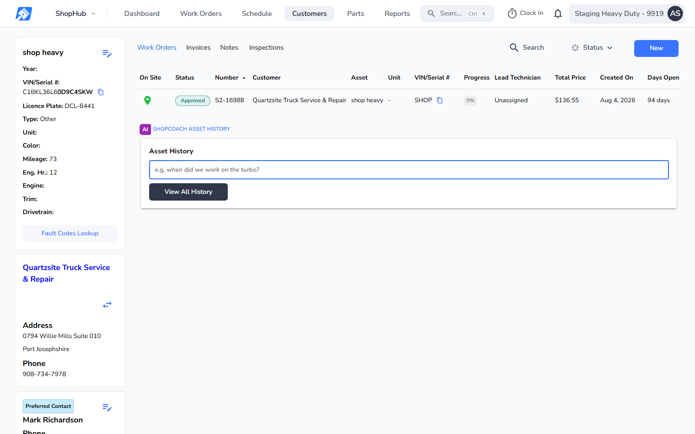
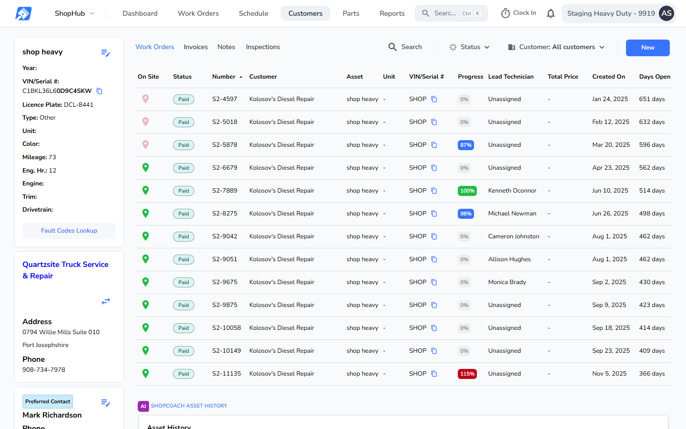
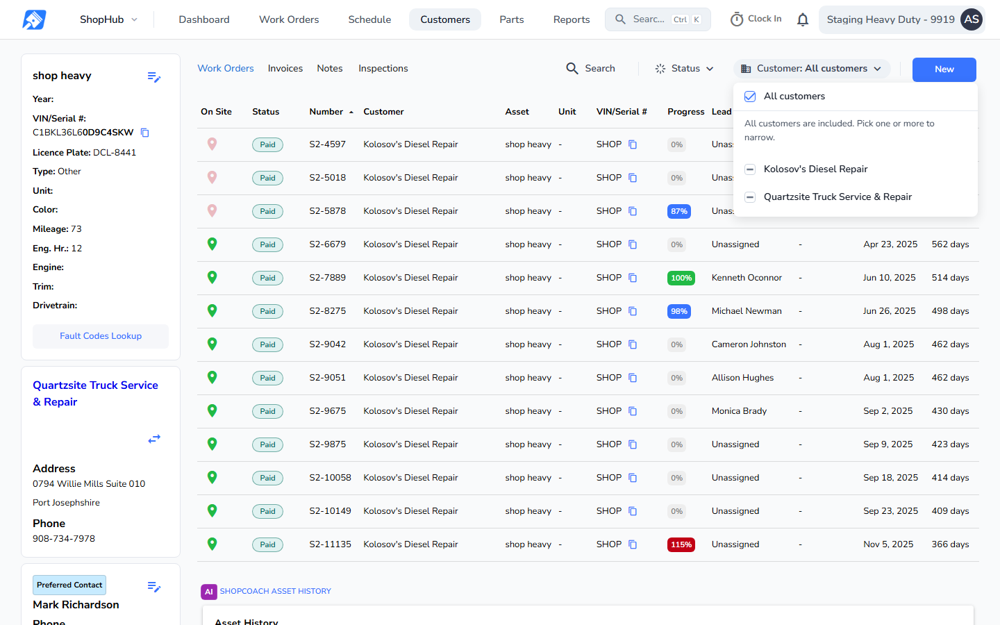
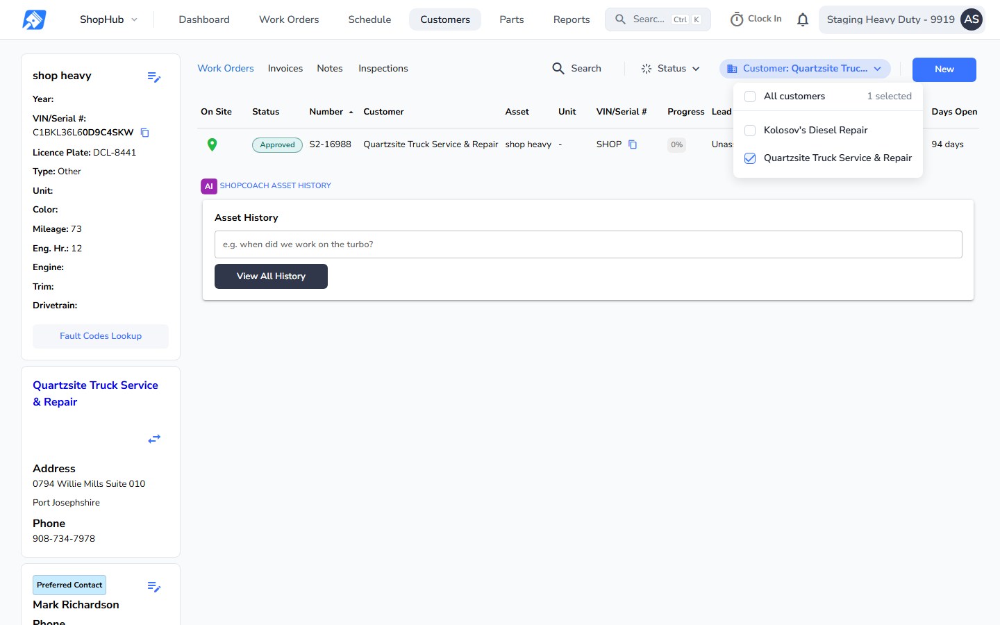
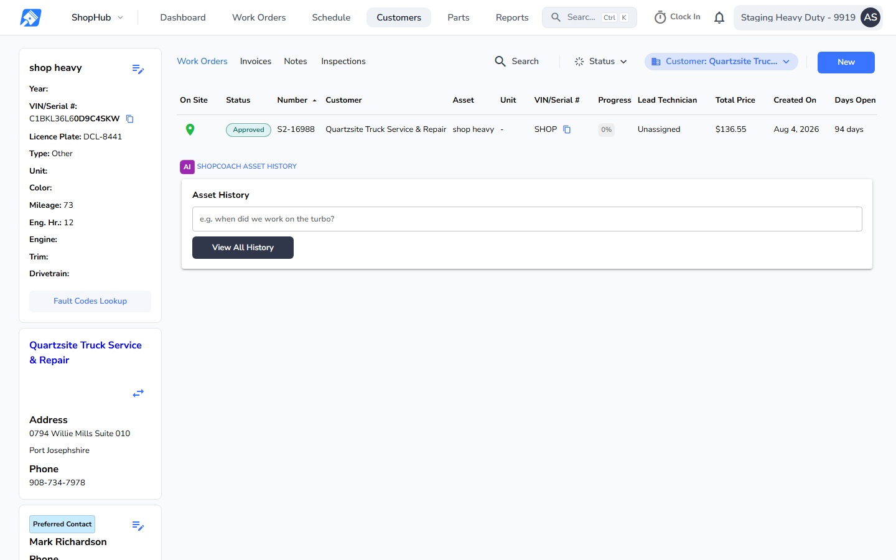
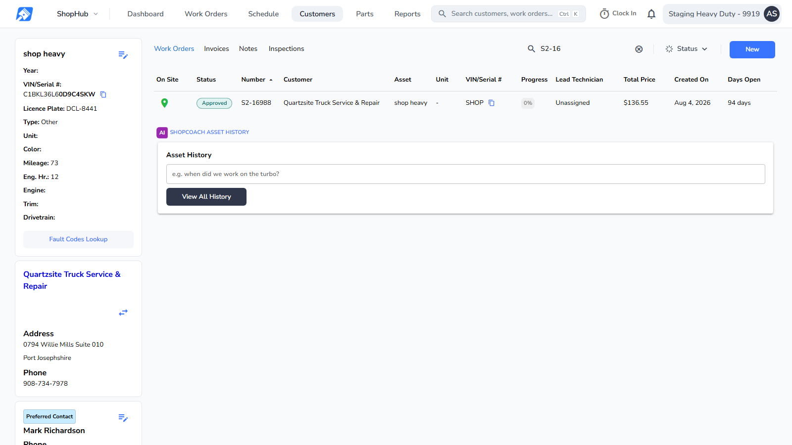
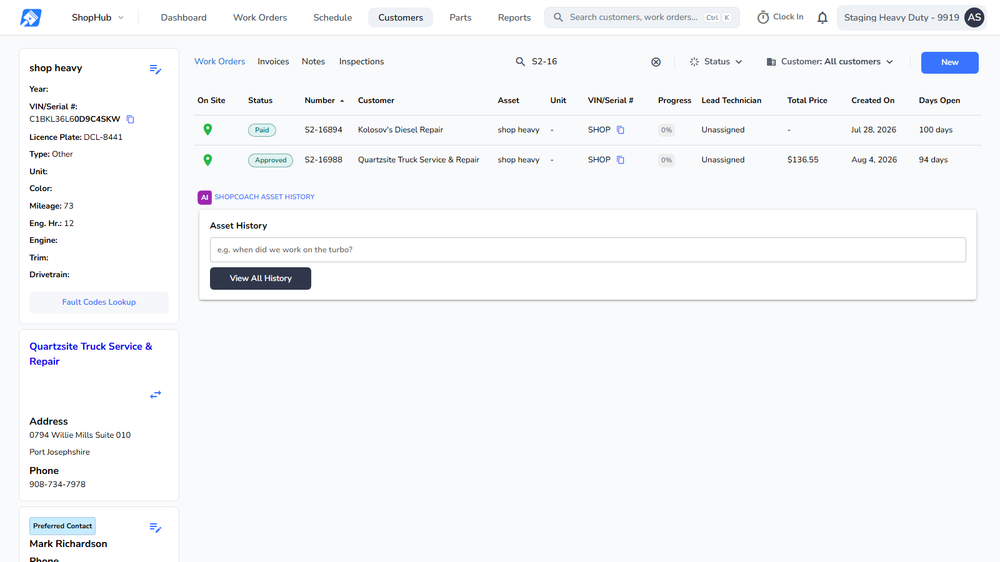
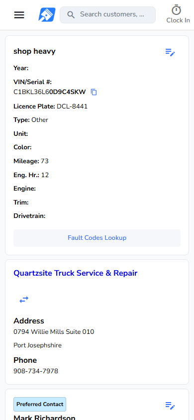
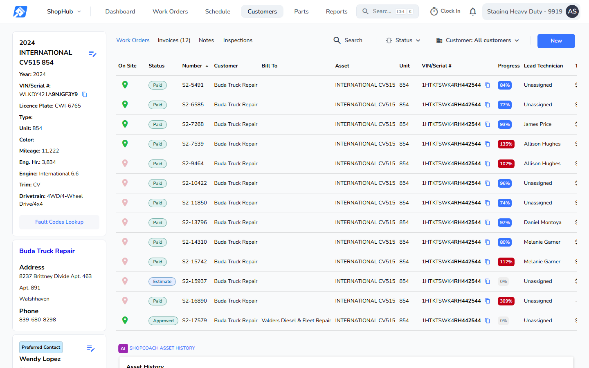
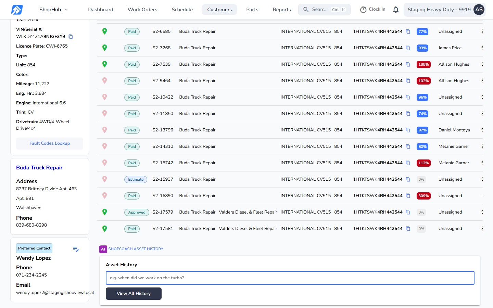

7. Asset Work Orders tab
Asset "shop heavy", opened from its current owner, Quartzsite Truck Service & Repair. It had an earlier owner, Kolosov's Diesel Repair. Left to right: the default view, the Customer chip open, one customer picked, applied, a 1600px board with search filled, then phone. Last row: the asset of S2-17579 (2024 INTERNATIONAL CV515, unit 854, Buda Truck Repair), where two work orders bill someone else, to show the "Bill To" column added after the tech review. Before: production v26.45.2.1. After: the locked Bill To build.
Production (v26.45.2.1)Work Orders tab

- Only the current owner's work: S2-16988. Toolbar: Search, Status, New.
This buildWhole history

- Every work order on the asset at this location, for every owner and payer, oldest first as today: Kolosov's work orders now appear too.
- No row here bills someone else, so there is no "Bill To" column (see the S2-17579 asset below). Rechecked after the tech review: pixel-identical, not replaced.
- New chip between Status and New: "Customer: All customers". Search and Status shift left to make room; New stays at the right edge. The chip is the only addition and nothing wraps.
- Release-day change: old owners' jobs appear on this tab.
New, no before existsCustomer chip open

- "All customers" ticked, then "All customers are included. Pick one or more to narrow.", then each customer on the asset's work orders, as customer or Bill To, A to Z: "Kolosov's Diesel Repair", "Quartzsite Truck Service & Repair".
- Search shows only with more than 8 options.
New, no before existsOne customer picked

- Quartzsite ticked: "1 selected", and the chip reads "Customer: Quartzsite Truc...".
New, no before existsApplied

- Only S2-16988. A work order matches when a picked customer is its customer or its Bill To.
Production (v26.45.2.1)1600 wide, search "S2-16"

- One match from the current owner, S2-16988.
This build1600 wide, search "S2-16"

- Searching the whole history finds Kolosov's S2-16894 as well. The search box, Status, Customer chip and New sit on one line at 1600; nothing wraps.
Production (v26.45.2.1)Phone

- The asset card comes first on a phone.
This buildPhone

- Same order as production.
Bill To column (asset of S2-17579, unit 854, Buda Truck Repair)
This buildWork Orders tab, top

- A "Bill To" column sits right after Customer because a loaded row bills someone else. S2-17579 reads "Buda Truck Repair", "Valders Diesel & Fleet Repair".
- Self-billed rows leave the Bill To cell blank. Oldest first, as today.
- At 1440 the extra column pushes the last columns past the right edge; the table scrolls sideways.
- No production board for this asset: production was not re-run for this update. Production's tab has no Bill To column on any asset (see the "shop heavy" before board above).
- Accuracy check: top bar identical to production; the tab toolbar differs from production only by the Customer chip (this build) and the Invoices count, which is this asset's data.
This buildWork Orders tab, scrolled

- The last two rows, S2-17579 (Approved) and S2-17581 (Paid), both read "Valders Diesel & Fleet Repair" under Bill To.
- When no loaded row bills someone else the column is not shown at all.